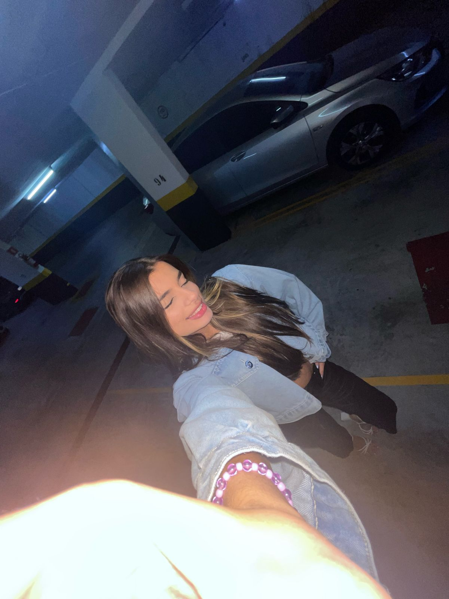
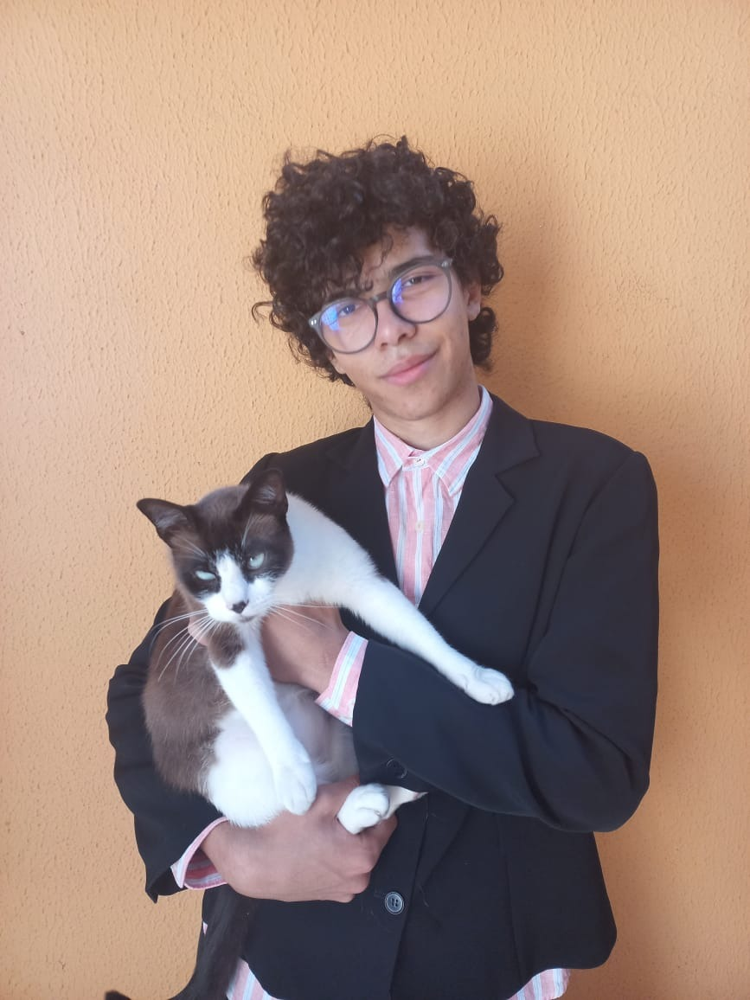
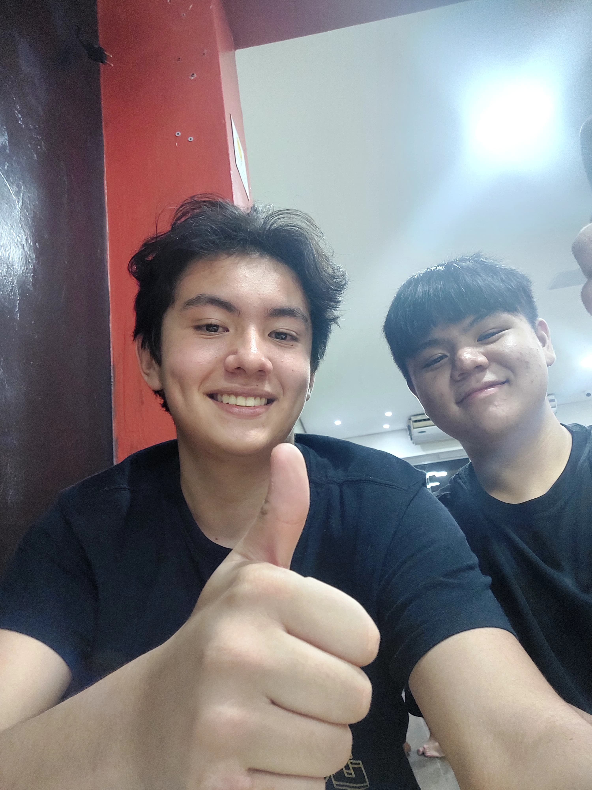
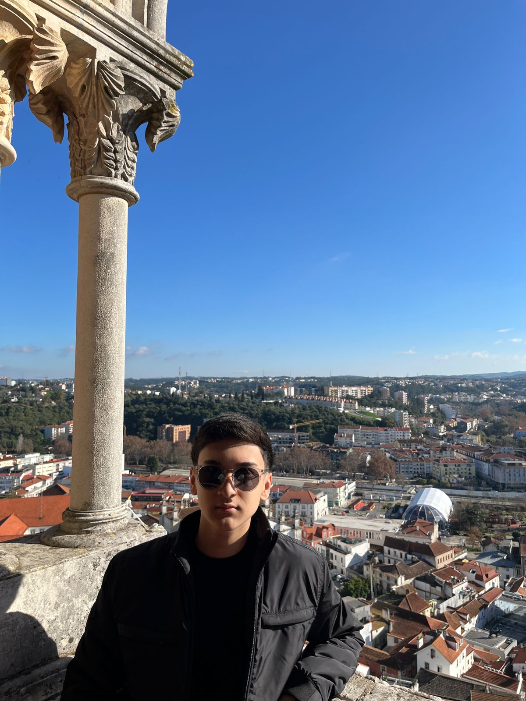

Sou aluna do Alcina há quase 2 anos, tenho 17 anos e nasci em Natal, RN.
Há cerca de um ano e meio, tomei uma decisão de mudar minha vida ao me
mudar para São Caetano do Sul, São Paulo. Atualmente, estou cursando o curso
de TI no terceiro ano do ensino médio no Colégio Alcina Dantas Feijão.

Gabriella Viana Lisbôa
Sou aluna do Alcina há quase 3 anos,tenho 17 anos,moro em São Caetano do Sul,
tenho conhecimentos em alguns liguagens da programação como:HTML,CSS,JavaScript e PHP.
Sou dedicada,proativa e focada nos objetivos que pretendo alcançar.
Meu Desejo e cursar uma faculdade voltada para area de TI.
Gustavo Roberto Coelho
Sou Gustavo estou cursando o novo ensino media com ênfase em TI, na escola EME Professora Alcina Dantas Feijão.
tenho conhecimentos nas áreas de HTML, PHP e CSS , tenho muitas ideias e criatividade
e senso de humor criando um ambiente agradável

Pedro Yudi Chibana Levy
Meu nome é Pedro Yudi Chibana Levy, tenho 16 anos e nasci em São Paulo capital.
Estou cursando TI no ensino médio, mas meu interesse principal é seguir uma carreira
em engenharia aeronáutica. Atualmente, tenho apenas noções sobre o campo, mas estou aberto
a explorar e aprender mais sobre ele.

Vinicius Shinohara Barbosa
Sou aluno do Alcina há 2 anos, moro em São Caetano do Sul, tenho conhecimentos
em HTML, CSS, JavaScript e PHP. Meu nível de inglês é mediano, porém ainda possuo
dificuldade em pronunciar certar palavras.Sou uma pessoa resiliente, com dedicação e
foco no objetivos e metas a serem concluidas. Meu desejo é cursar alguma faculdade
relacionada a área de TI.
